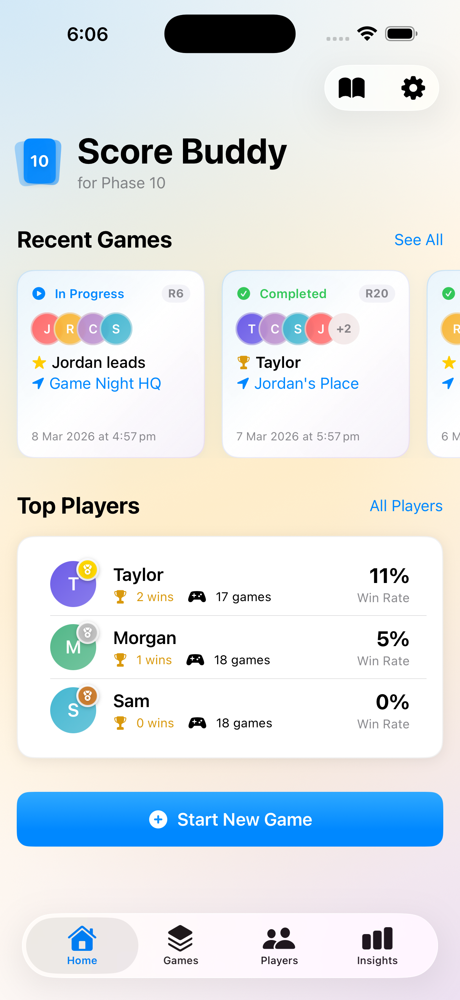
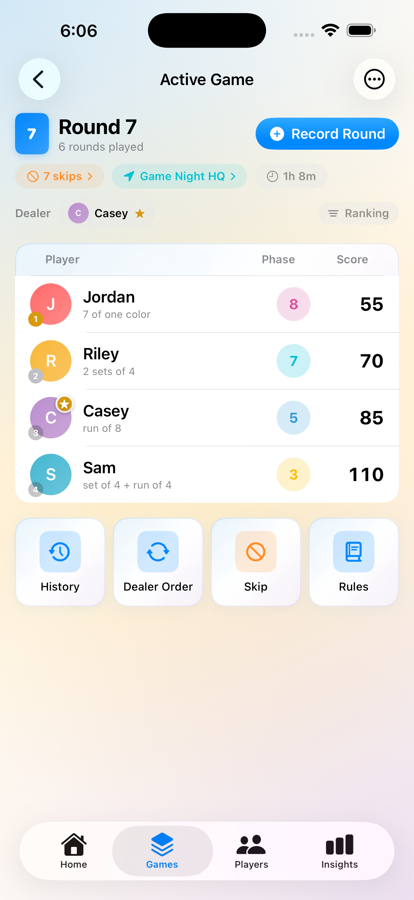
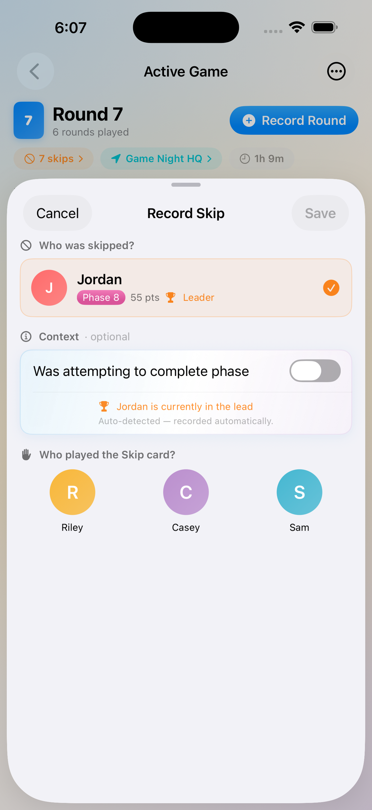
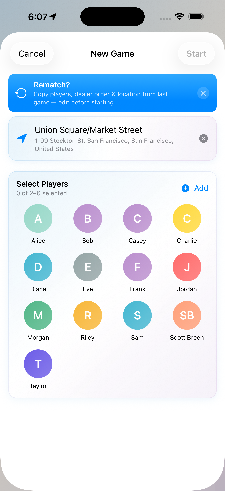
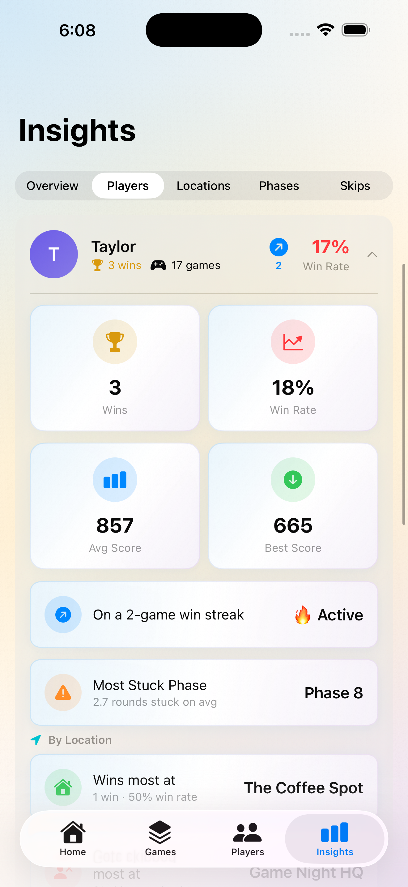

Game Night HQ.
The Phase 10 score tracker.
The rivalry is real — rounds in seconds, live rankings, and proof that you're the best player at the table.


Everything your game night needs.
Built for exactly one game. Every feature designed around how Phase 10 actually gets played.
Rounds in seconds.
Tap in scores and mark phase completions — done before the next deal. Live rankings re-sort the moment a round is saved, so everyone knows exactly where they stand.
- ✓ Phase progress chips for every player at a glance
- ✓ Dealer tracking with automatic rotation each round
- ✓ Edit the last round if someone made a mistake
- ✓ Export a full scoresheet as CSV after every game

Swipe. Tap. Done.
Swipe right on any player to record a Skip card. They're pre-selected as the target — tap who played the card and it saves instantly. The fastest skip tracking you've ever used.
- ✓ Swipe-to-skip: two taps to record a Skip card
- ✓ Undo banner for 30 seconds after every skip
- ✓ Per-game skip summary — who gave, who got
- ✓ Skip personalities & rivalry stats across your history (Pro)

Same crew, one tap.
When a game ends, Score Buddy remembers everything. The rematch banner copies your players, seating order, and location — your next game is set up before you've even shuffled the deck.
- ✓ One-tap rematch pre-fills players, seating & location
- ✓ Full round history with pass/fail per player
- ✓ Recent games on your home screen — tap to jump back in

Data, not hearsay.
Win rates, hot and cold streaks, monthly performance, and a computed title for every player — The Aggressor, Comeback Kid, Home Court Hero, The Wall. Proven by the numbers.
- ✓ Win trends & streak analysis across your whole history
- ✓ Location Insights — win rates and skip patterns per venue
- ✓ Skip Analytics — personalities, rivalries & hostility scores
- ✓ Most Stuck Phase — find out which phase wrecks your group

See it in action.
All screens from the app.
Free to play. Pro to dominate.
Score Buddy is free with the core features you need. Upgrade once to unlock everything — forever.
Free
Everything you need to play
Score Buddy Pro
One-time purchase · Unlock everything
One-time purchase · Available in-app
Built differently.
Built for Phase 10 only
Not a generic score tracker that half-works for Phase 10. Every feature — phases, skip cards, dealer rotation, rematch — designed for this exact game.
Your data, your device
No account. No cloud sign-in. No subscription. Your players and scores live on your device, backed up by iCloud just like your photos.
Built for everyone
Full VoiceOver support. Dynamic Type scaling. Nothing requires a swipe gesture. Score Buddy works for every player at the table.
Common questions.
Yes — Score Buddy is free to download and fully usable with no time limits. The free version lets you track games for up to 6 players, save up to 3 games, and see basic stats. No credit card, no trial period.
Pro unlocks: unlimited saved games & full history; Advanced Statistics with win trends, streaks, and player titles; Location Insights (win rates by venue); Skip Analytics (personalities, rivalries, hostility scores); Player Customisation (emoji, photo, accent colour); and Live Activities on iPhone (Dynamic Island & Lock Screen).
One-time purchase. Pay once and keep it forever — no renewals, no recurring charges, no hidden fees. Pro is tied to your Apple ID and can be restored on any device for free.
Swipe right on the player who was skipped. The Skip Entry sheet opens with them pre-selected as the target. Tap who played the Skip card and it saves automatically — no Save button needed. You can also tap ⋯ → Quick Actions → Record Skip to open the skip sheet manually.
Yes. In an active game, tap ⋯ → Edit Last Round. The round editor opens pre-populated with the saved values — correct the scores or phases and tap Save. Only the most recently recorded round can be edited this way.
Yes — Score Buddy is optimised for both iPhone and iPad. Note: Live Activities (Dynamic Island & Lock Screen updates) are an Apple platform limitation and are iPhone-only across all apps.
Go to Settings in the app, tap Score Buddy Pro, then tap Restore Purchases. Your purchase is tied to your Apple ID and can be restored on any device you're signed into. If the problem persists, contact support.
Yes. Every player row in an active game announces rank, name, current phase, and score together. Score entry fields and phase toggles in round entry are individually labelled per player. All swipe actions (skip, remove) have dedicated VoiceOver alternatives — nothing requires a swipe gesture. All text and badges scale with your iOS text size settings.
Ready to settle the score?
Track phases, rivalries, and stats from your very first game — free, no account needed.
No account needed. Your data stays on your device.